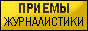

Delphi5
AKdTopic
от 8.11.2000 (public release 5)
AKdTopic - это дайджест по эхоконференции RU.DELPHI, который включил в себ€ все то, что показалось мне полезным на момент его составлени€. ¬ тоже врем€ этот проект содержит не только вопросы (ответы на которые показались мне неочевидными) и ответы на них в текстовом изложении, но и библиотеку AKTools, котора€ включает в себ€ множество функций и классов, несомненно облегчающих жизнь программистам (мне, например:). ѕри составлении этого проекта € достаточно часто значительно видоизмен€л исходные ответы, так что имена их авторов в большинстве своем были утер€ны. ¬ы можете использовать части библиотеки AKTools без какого-либо упоминани€ моих авторских прав. Ќекоторые процедуры вовсе не претендуют на звание "самый качественный код 2000ого года", а некоторые и вовсе сделаны как заплатки, так что перед использованием просмотрите соответствующую процедуру на предмет пригодности дл€ ваших задач. —обственно тоже касаетс€ и советов из раздела вопрос-ответ.
|
ћногие функции модул€ AKTools документируютс€ не сразу (в св€зи с отсутствием времени), а поэтому просматривайте pas-файлы. стати, ищетс€ человек, желающий зан€тьс€ оформлением AKdTopic - мыльте на groupstudio@mail.ru и ваше место в списке авторов этого проекта будет обеспечено. ≈сли вы поместите мою кнопку (на www.akhome.da.ru снизу страницы есть ее код) себе на страницу и напишите об этом мне, то ваша ссылочка скорее всего(если там хоть что-то хорошее есть) по€витс€ в CHM-варианте AKdTopic. |
ѕерейти на оглавление.
ѕрочитать инструкции по установке
| —сылки :  |
Copyright (c) јлександр
рамаренко. |